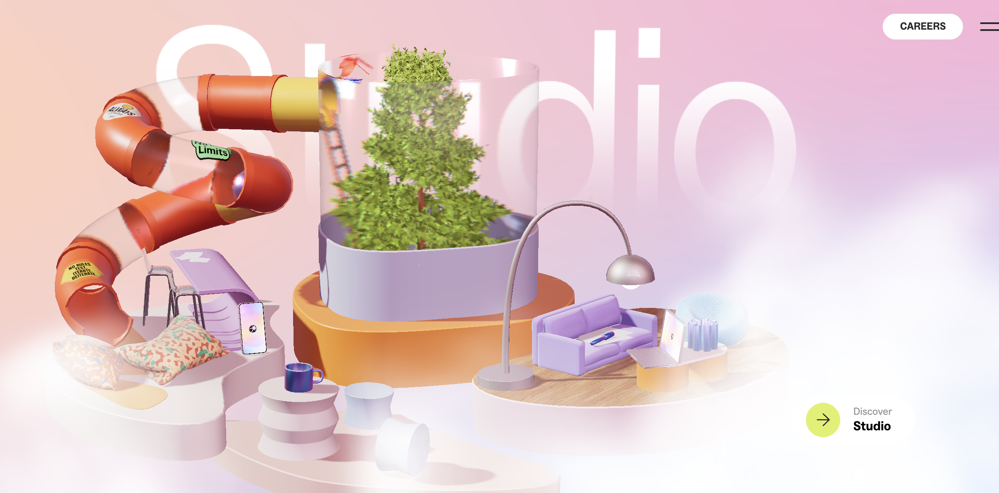
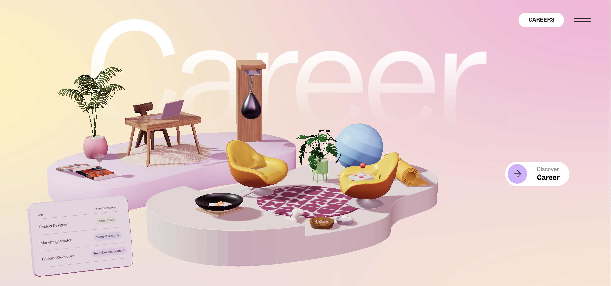

Introduction
LUNIVERSE
Luni is an interactive website that uses 3D environments, animation, and user interaction to create an engaging digital experience. The platform presents different sections as small immersive worlds, encouraging users to explore through scrolling and cursor movement. Its playful design and dynamic visuals make the experience both creative and engaging.




→
Discover
Enter →